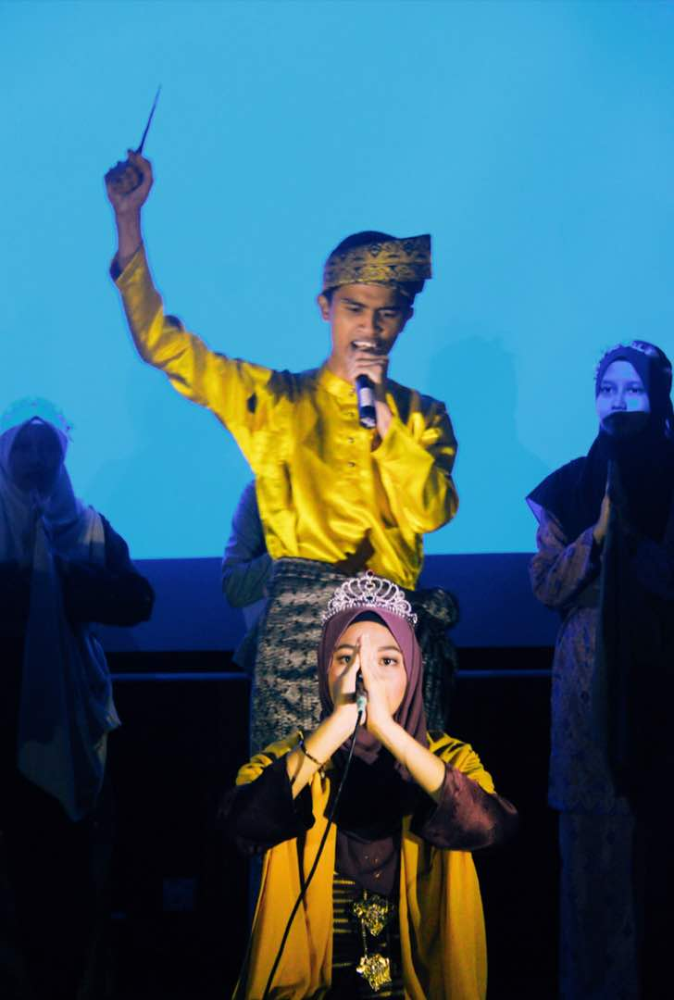

MY EXPERIENCE

| 
| 
|  | 
|
|---|
While I was in semester 1 at Uitm Jengka, my classmates and I were involved in theater at OMSA Junior's Night event. Before the ceremony, we have made the preparation and rehearsal of the theater with full enthusiasm as this is our first performance in UiTM Jengka as new students. We have chosen the Gunung Ledang theater as our acting to be presented to other students. On the day of the incident, everyone was focused on our acting which is very soulful of the character especially me who holds the main character as 'Gusti Puteri' a princess who is on the ledang mountain waiting for her lover. I did not expect, my acting as the main character succeeded with the sweat points that were given during the training and the acting of my friends who enlivened the character even more to the character Hang Tuah, Sultan melaka, Embuk, Tun Teja and others. most surprising to us, that night our class was announced as theatrical champions.
I also volunteered to be the facilitator of a program called Strive Towards Dakwah (STOD) at a secondary school in Rembau. The program runs for 3 days and two nights with very beneficial activities to be held for school students. The objective of this program is to strengthen the brotherhood of the hostel students to help each other and remind themselves of God and give a little knowledge about da'wah. Students in this school are also very friendly and cheerful during the activities.